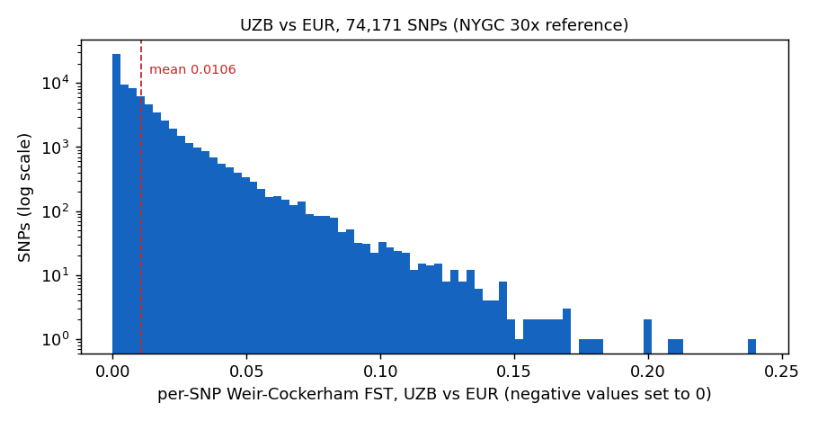
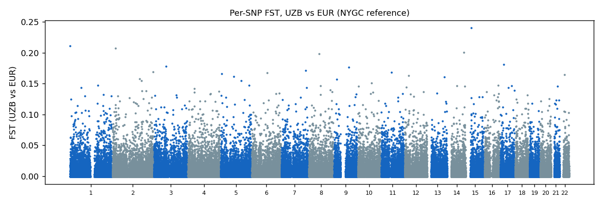
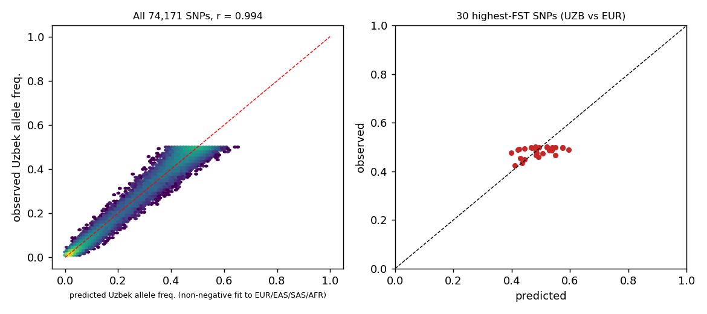

1. Overview
FST measures how much allele frequencies differ between two populations: 0 means identical frequencies, 1 means fixed different alleles. This step estimates it for the Uzbek cohort against four continental reference groups and uses the per-SNP values to ask two questions: how far is the Uzbek cohort from each reference, and does any single locus differ much more than the genome-wide level would predict.
This page was rebuilt on 2026-10-04. All numbers below come from the NYGC 30x high-coverage GRCh38 reference (md5-verified) and the expanded cohort of 1,256 Uzbek samples. The earlier hg19 pipeline (2025), the August 2026 run on the old GRCh38 reference file, and the “256 loci with FST > 0.5” are withdrawn; the hg19 pipeline is kept collapsed at the bottom for provenance only.
2,712
NYGC reference (EUR 633, EAS 585, SAS 601, AFR 893)
82,744
SNPs, all ten pairs
74,171
SNPs after indel filter
0.0152
UZB vs EUR weighted FST
0.240
highest single-SNP FST
How to read an FST value
| FST | Reading | This analysis |
|---|
| 0.00–0.05 | little differentiation (same continental group) | UZB vs SAS, UZB vs EUR, UZB vs EAS (0.014–0.040); EUR vs SAS (0.031) |
| 0.05–0.15 | moderate | EAS vs SAS (0.057), EUR vs EAS (0.087), UZB vs AFR and SAS vs AFR (about 0.13) |
| 0.15–0.25 | great | EAS vs AFR (0.167) |
| >0.25 | very great | no pair; no single SNP reaches 0.25 |
2. Data and method
- Cohort: expanded ALSU Uzbek cohort, 1,256 samples (array, imputed; see cohorts and sample sets).
- Reference: 1000 Genomes high-coverage (NYGC) GRCh38, 3,202 samples, all 22 chromosome files verified against the official md5 manifest. Superpopulations used: EUR, EAS, SAS, AFR. AMR is not used. Reference samples were not filtered for relatedness.
- Markers: 82,744 LD-pruned SNPs present in both data sets, merged by position and alleles (
/staging/ALSU-analysis/spring2026/full_expanded_cohort/nygc30x_1256/merged_nygc.bim on DRAGEN). A second, stricter set drops the 8,573 sites where the NYGC call set has an overlapping indel, multiallelic or structural-variant record within 1 bp, because single-base comparisons are not reliable there (list: nygc30x_1256_filt/flagged_overlap.txt). This leaves 74,171 sites for the UZB pairs. The number of SNPs per pair in the table can be smaller because PLINK drops sites that are monomorphic in both groups.
- Estimator: PLINK 1.9
--fst --within, Weir & Cockerham. “Weighted” is the ratio of summed numerators to summed denominators over all SNPs (the standard genome-wide value); “mean” is the plain average of per-SNP values. The ± is a leave-one-chromosome-out jackknife standard error of the mean per-SNP value (22 blocks), so it reflects variation between chromosomes.
3. Pairwise FST, all ten pairs
| Pair | Weighted FST, 82,744 SNPs | Weighted FST, indel-filtered | Mean per-SNP FST ± jackknife SE | SNPs (filtered) |
|---|
| UZB vs SAS | 0.0143 | 0.0141 | 0.0097 ± 0.0001 | 74,171 |
| UZB vs EUR | 0.0152 | 0.0152 | 0.0106 ± 0.0001 | 74,171 |
| UZB vs EAS | 0.0400 | 0.0401 | 0.0240 ± 0.0001 | 74,171 |
| UZB vs AFR | 0.1310 | 0.1307 | 0.0615 ± 0.0006 | 74,171 |
| EUR vs SAS | 0.0314 | 0.0313 | 0.0207 ± 0.0002 | 73,166 |
| EAS vs SAS | 0.0570 | 0.0572 | 0.0339 ± 0.0002 | 73,878 |
| EUR vs EAS | 0.0872 | 0.0875 | 0.0515 ± 0.0002 | 74,149 |
| AFR vs SAS | 0.1294 | 0.1291 | 0.0616 ± 0.0006 | 72,707 |
| AFR vs EUR | 0.1414 | 0.1411 | 0.0736 ± 0.0007 | 71,303 |
| AFR vs EAS | 0.1668 | 0.1665 | 0.0756 ± 0.0007 | 69,859 |
Result. The Uzbek cohort is about equally close to South Asians (0.0143) and Europeans (0.0152), clearly farther from East Asians (0.0400) and farthest from Africans (0.1310). The ranking is the same with or without the 8,573 flagged sites; no weighted value moves by more than 0.0005. The UZB–AFR distance (0.1310) is almost identical to SAS–AFR (0.1294). The matrix, heatmap and MDS are on
step 14.
The UZB–SAS and UZB–EUR values differ by only 0.0010, which is about 7 jackknife standard errors of the mean per-SNP value, so the difference is measurable, but both distances are small. “Closer to SAS or to EUR” should not be over-read: it depends on the reference panel, which has no Central Asian populations.
4. Distribution of per-SNP FST, UZB vs EUR

Per-SNP FST, UZB vs EUR, 74,171 SNPs after the indel filter. Log scale on the y-axis; the dashed line is the mean.
| FST bin | SNPs | Share |
|---|
| [0.0, 0.005) | 35,012 | 47.2% |
| [0.005, 0.01) | 13,606 | 18.3% |
| [0.01, 0.02) | 13,852 | 18.7% |
| [0.02, 0.03) | 5,350 | 7.2% |
| [0.03, 0.05) | 4,211 | 5.7% |
| [0.05, 0.1) | 1,903 | 2.6% |
| [0.1, 0.2) | 233 | 0.3% |
| [0.2, 1.01) | 4 | 0.0% |
Median 0.0057, mean 0.0106, 95th percentile 0.040, 99th 0.073, 99.9th 0.127, maximum 0.240. 237 SNPs exceed 0.10, 4 exceed 0.20 and none exceeds 0.30. A tail towards 0.5–1 would indicate fixed or near-fixed differences; here the tail ends at 0.24.

Per-SNP FST along the genome, UZB vs EUR. No chromosome or region stands out.
5. The 30 most differentiated SNPs, and why they are not selection candidates
| # | SNP (GRCh38) | FST | UZB | EUR | EAS | SAS | AFR | Gene overlap (Ensembl) |
|---|
| 1 | 15:28037595 | 0.240 | 0.49 | 0.85 | 0.12 | 0.63 | 0.86 | OCA2 |
| 2 | 1:1395346 | 0.211 | 0.48 | 0.82 | 0.02 | 0.33 | 0.07 | CCNL2 |
| 3 | 2:16996394 | 0.207 | 0.50 | 0.83 | 0.20 | 0.49 | 0.51 | no gene overlap |
| 4 | 14:94924457 | 0.200 | 0.50 | 0.83 | 0.21 | 0.38 | 0.30 | no gene overlap |
| 5 | 8:61260109 | 0.198 | 0.50 | 0.83 | 0.14 | 0.34 | 0.12 | CLVS1 |
| 6 | 17:19291499 | 0.181 | 0.50 | 0.81 | 0.01 | 0.36 | 0.22 | EPN2 |
| 7 | 3:71472343 | 0.178 | 0.50 | 0.81 | 0.05 | 0.50 | 0.68 | FOXP1 |
| 8 | 9:88585098 | 0.177 | 0.45 | 0.16 | 0.88 | 0.46 | 0.66 | no gene overlap |
| 9 | 7:144467676 | 0.171 | 0.49 | 0.19 | 0.83 | 0.41 | 0.54 | TPK1 |
| 10 | 2:241199075 | 0.169 | 0.49 | 0.20 | 0.86 | 0.46 | 0.40 | ANO7 |
| 11 | 11:61956231 | 0.169 | 0.47 | 0.77 | 0.14 | 0.30 | 0.44 | BEST1 |
| 12 | 6:90733330 | 0.167 | 0.49 | 0.19 | 0.76 | 0.50 | 0.31 | Ensembl gene without symbol |
| 13 | 5:4938017 | 0.166 | 0.49 | 0.19 | 0.97 | 0.51 | 0.32 | no gene overlap |
| 14 | 22:22908567 | 0.164 | 0.49 | 0.78 | 0.10 | 0.52 | 0.52 | no gene overlap |
| 15 | 12:22515385 | 0.163 | 0.50 | 0.79 | 0.05 | 0.61 | 0.19 | C2CD5, C2CD5-AS1 |
| 16 | 5:77826000 | 0.162 | 0.43 | 0.15 | 0.83 | 0.55 | 0.77 | TBCA |
| 17 | 13:98100471 | 0.161 | 0.50 | 0.21 | 0.92 | 0.57 | 0.53 | Ensembl gene without symbol |
| 18 | 2:162485382 | 0.158 | 0.47 | 0.76 | 0.25 | 0.48 | 0.16 | KCNH7 |
| 19 | 9:16822801 | 0.157 | 0.50 | 0.21 | 0.86 | 0.59 | 0.32 | BNC2 |
| 20 | 2:172397611 | 0.155 | 0.50 | 0.21 | 0.91 | 0.48 | 0.39 | ITGA6 |
| 21 | 5:123069864 | 0.155 | 0.47 | 0.76 | 0.13 | 0.42 | 0.67 | no gene overlap |
| 22 | 10:81903459 | 0.151 | 0.49 | 0.77 | 0.21 | 0.45 | 0.29 | NRG3 |
| 23 | 1:165658651 | 0.148 | 0.45 | 0.18 | 0.85 | 0.51 | 0.41 | MGST3 |
| 24 | 5:170729528 | 0.147 | 0.43 | 0.16 | 0.82 | 0.45 | 0.28 | KCNIP1 |
| 25 | 16:81327689 | 0.147 | 0.49 | 0.77 | 0.18 | 0.48 | 0.53 | GAN |
| 26 | 14:53720346 | 0.147 | 0.46 | 0.74 | 0.09 | 0.46 | 0.47 | DDHD1-DT, LINC02331 |
| 27 | 8:69492913 | 0.146 | 0.50 | 0.78 | 0.28 | 0.51 | 0.73 | LINC01603, SULF1 |
| 28 | 17:66222489 | 0.146 | 0.50 | 0.22 | 0.75 | 0.63 | 0.47 | APOH |
| 29 | 10:3514402 | 0.146 | 0.48 | 0.20 | 0.81 | 0.31 | 0.14 | LINC02669 |
| 30 | 14:100668647 | 0.146 | 0.48 | 0.76 | 0.08 | 0.41 | 0.32 | LINC00523 |
Frequencies are for the allele that is the Uzbek minor allele. Gene overlap was looked up by position in Ensembl on 2026-10-04; “no gene overlap” means no annotated gene covers the position.
What the pattern says. In all 30 SNPs the Uzbek frequency lies between the EUR and EAS frequencies, near 0.5 (0.43–0.50), while EUR and EAS sit at opposite ends. That is what a population made of roughly equal parts of two differentiated sources looks like, and it is why these SNPs rank highest for UZB vs EUR. As a direct test, a non-negative least-squares fit of the Uzbek frequency as a mixture of the four references gives EUR 49%, EAS 28%, SAS 23%, AFR 0%, close to the ADMIXTURE K=4 result (about 50% / 30% / 19% / 0%,
step 11), and predicts the observed Uzbek frequency at all 74,171 SNPs with r = 0.994 (RMSE 0.021). The 30 top SNPs are predicted to within 0.11 at most (mean 0.037). Only 0.12% of all SNPs deviate from the mixture prediction by more than 0.10, and the largest deviation is 0.15.

Observed Uzbek allele frequency against the frequency predicted from a fitted mixture of the references. Alleles are oriented to the Uzbek minor allele, so observed values do not exceed 0.5.
The list contains known pigmentation loci (for example OCA2, BNC2), which differ strongly between Europeans and East Asians and are therefore expected near the top of the FST ranking of any population with ancestry from both. Nothing in this list needs a selection explanation, and none was tested for one.
6. FST by chromosome (UZB vs EUR)
| Chr | SNPs | Mean | Median | Max |
|---|
| 1 | 6,033 | 0.0104 | 0.0057 | 0.211 |
| 2 | 5,809 | 0.0107 | 0.0058 | 0.207 |
| 3 | 5,082 | 0.0105 | 0.0055 | 0.178 |
| 4 | 4,819 | 0.0109 | 0.0063 | 0.142 |
| 5 | 4,533 | 0.0099 | 0.0054 | 0.166 |
| 6 | 4,162 | 0.0104 | 0.0057 | 0.167 |
| 7 | 3,888 | 0.0109 | 0.0059 | 0.171 |
| 8 | 3,762 | 0.0108 | 0.0059 | 0.198 |
| 9 | 3,314 | 0.0103 | 0.0053 | 0.177 |
| 10 | 3,799 | 0.0106 | 0.0061 | 0.151 |
| 11 | 3,646 | 0.0113 | 0.0061 | 0.169 |
| 12 | 3,636 | 0.0107 | 0.0057 | 0.163 |
| 13 | 2,721 | 0.0103 | 0.0056 | 0.161 |
| 14 | 2,524 | 0.0102 | 0.0057 | 0.200 |
| 15 | 2,364 | 0.0104 | 0.0053 | 0.240 |
| 16 | 2,656 | 0.0108 | 0.0057 | 0.147 |
| 17 | 2,559 | 0.0107 | 0.0057 | 0.181 |
| 18 | 2,439 | 0.0109 | 0.0058 | 0.132 |
| 19 | 1,963 | 0.0103 | 0.0054 | 0.118 |
| 20 | 2,109 | 0.0100 | 0.0050 | 0.125 |
| 21 | 1,143 | 0.0107 | 0.0056 | 0.146 |
| 22 | 1,210 | 0.0107 | 0.0054 | 0.164 |
Chromosome means range from 0.0099 to 0.0113, around the genome-wide mean of 0.0106; no chromosome is an outlier.
7. What changed relative to earlier versions of this page
| Earlier statement | Status now |
|---|
| UZB vs EUR weighted FST 0.0150; UZB vs EAS 0.0396; UZB vs SAS 0.0145; UZB vs AFR 0.1283 (August 2026, old reference) | Replicated on NYGC: 0.0152, 0.0400, 0.0143, 0.1310. Same ranking, differences up to 0.0027. |
| 256 loci with FST > 0.5; loci with FST = 0.998 (chr9 14.8 Mb, chr1 40.9 Mb) (hg19 run, 2025) | Not reproducible: the highest per-SNP FST on NYGC is 0.240. The earlier values came from the old reference file and the 2025 pipeline; do not cite. |
| “Annotate the 256 extreme loci”, “highly differentiated loci: potential biology” | Withdrawn. Replaced by section 5 (the top SNPs are admixture-informative, not selection signals). |
| Reference sizes EUR 503 / EAS 504 / SAS 489 / AFR 660 (1000G phase 3) | NYGC high-coverage sizes: EUR 633 / EAS 585 / SAS 601 / AFR 893. |
8. Files
- DRAGEN, all pairs and logs:
/staging/ALSU-analysis/spring2026/full_expanded_cohort/pbs_refqc_2026-10/fst_all_pairs_2026-10-04/ (all_*.fst for 82,744 SNPs, filt_*.fst for the indel-filtered set); script /staging/tmp/scratch/alsu_fst_all.sh.
- Tables and figures on this page were produced from those files by
analysis.py and figs.py (project folder C:\work\alsu\nygc_site_2026-10-04\, copied into the repository under scripts/nygc_site_2026-10-04/).
9. Limitations
- The SNP set is an LD-pruned array-based panel; it has no power to find narrow selection signals and is not a catalogue of all differences.
- The reference panel has no Central Asian populations, so “closest” means closest among EUR, SAS, EAS and AFR.
- Reference individuals were not filtered for relatedness; the effect on the weighted values was not tested (the values changed by at most 0.0027 between two quite different reference files, so a large effect is unlikely).
- The jackknife standard error is for the mean per-SNP value; PLINK does not give one for the weighted value.